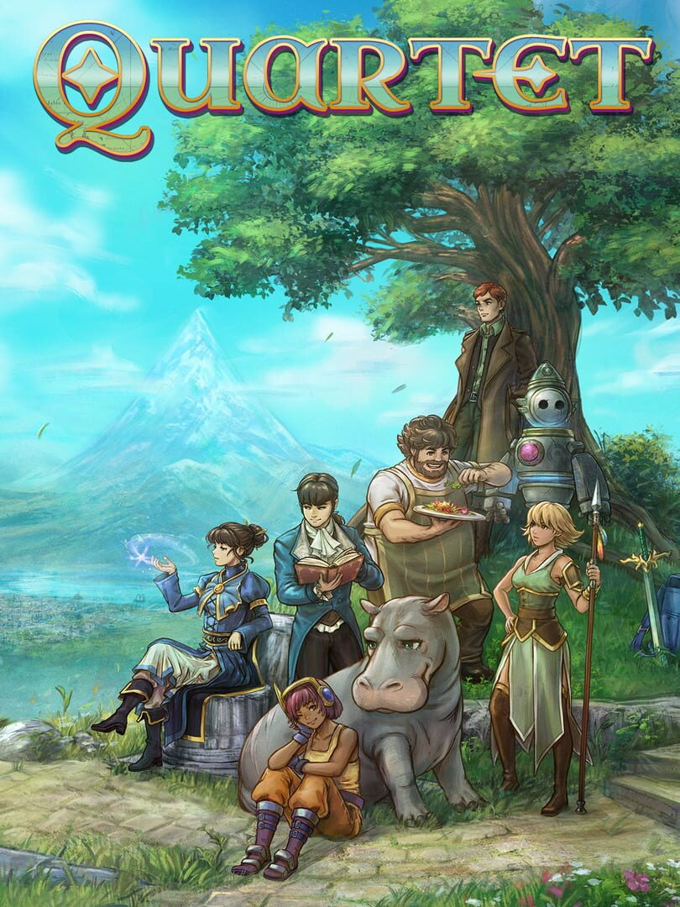

Quartet
Quartet
Details
|  | |
| Playtime | 3h 10m 0s |
| Last Activity | 2025-09-09 1:01:54 |
| Added | 2025-09-08 16:50:03 |
| Modified | 2025-09-08 16:50:20 |
| Completion Status | Played |
| Library | Steam |
| Source | Steam |
| Platform | PC (Windows) |
| Release Date | 2025-08-26 |
| Community Score | |
| Critic Score | |
| User Score | |
| Genre | Role-playing (RPG) Turn-based strategy (TBS) |
| Developer | Something Classic Games LLC |
| Publisher | Something Classic Games LLC |
| Feature | Single Player |
| Links | Uknown Uknown Uknown Uknown Uknown Uknown Uknown Uknown Uknown |
| Tag | |
Description
Story:
A series of train robberies leads to evidence of a government conspiracy. A mysterious deck of cards gives a young girl a vision of another world. A fleet of deadly airships burns a path across the Imperial frontier. The world’s unlikeliest hero manifests tremendous magical power. These stories intertwine in the world of Quartet. Before it is all over, the eight heroes will uncover how a secret, centuries-old conflict literally reshaped the world. Then they will have their own decision to make about the destiny of magic.
Gameplay:

Quartet is a 20-30 hour RPG that begins with four separate stories, playable in any order. Those stories come together, giving the player a final party of eight characters. In combat, the player can deploy four of those characters at a time, with the ability to quickly swap in any of the four “reserve” characters. When a character swaps in, they immediately take their turn. While characters are in the reserves, they regenerate their AP at an enhanced rate. This allows clever players to hit the enemy with a never-ending stream of their best attacks, by swapping characters in at just the right moment.
Like any good RPG, exploration is a key gameplay element in Quartet. Climb ropes, traverse dangerous cliff gaps and discover secret paths and be rewarded with powerful and rare loot, and with 8 playable characters, Quartet has a lot of rare loot and secrets to uncover.

Combat:

Eight characters fight against enemies in turn-based combat. The player can deploy four characters at a time, with the ability to swap in any of the four reserve characters. Swapped characters are able to immediately take a turn. While characters are in the reserve, they continue to regenerate their AP, allowing tactically savvy players to hit the enemy with a never-ending stream of their best attacks.
Features
Combat is fast-paced, turn-based, and full to the brim with TONS of special abilities to use. Each character and enemy turn are shown in the turn queue on the right, allowing the player to plan devastating and timely tactical strikes.
Players can unleash multiple elemental and physical abilities to exploit enemy weaknesses.
AP automatically regenerates after a hero's turn. So don't be stingy—spam those spells!
In Quartet, you control 4 characters on the front line, with the other 4 ready to jump into the action at any time. Ready to bring out your heavy-hitter or an emergency healer? Swap in seamlessly from the reserve party! Swapped-in characters take their turn immediately, with no penalty.
While characters are in the reserves, they also regenerate their ability points (AP) more rapidly, making swapping a crucial element of combat.
From the steampunk-inspired streets of Leornin to the forests on the barbarian frontier; from the cursed marshes of Tyche to the underworld warehouses of Seren, Quartet offers lots to explore.
Exploration is absolutely worth your while. With eight party members to equip, you need lots of gear, and a lot of it comes out of a treasure chest.
We have a hippo as a playable character